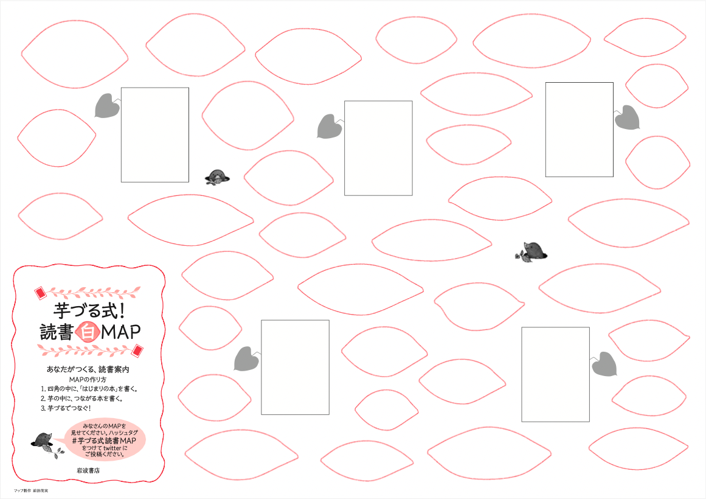
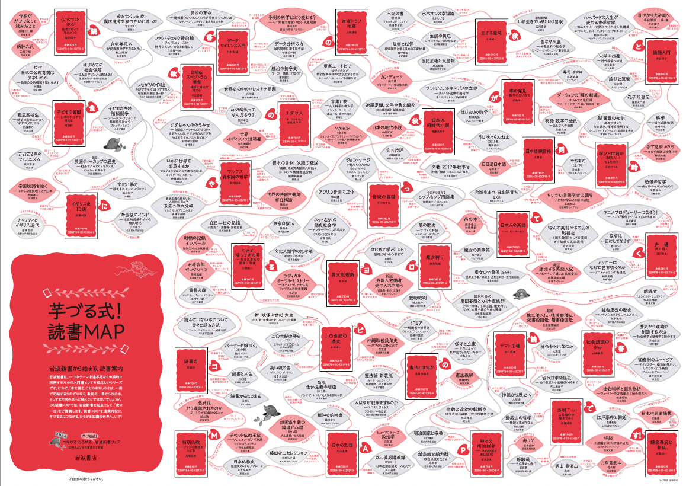
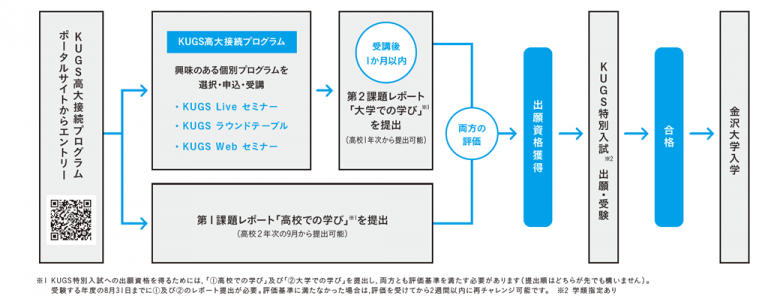

![]()
呼ばれたい名前
（位置絶対）
本で拓く探究ワークショップ
図書館から広がる知のつながり・問いのひらめき
Ⅰ. スケジュールと講師の紹介
スケジュール
| 時間 | 内容 |
|---|---|
| 10:30〜10:35 | スケジュールと講師の紹介 |
| 10:35〜11:00 | 自己紹介（アイスブレイク） |
| 11:00〜11:30 | イントロダクション：趣旨と芋づる式マップ |
| 11:30〜12:00 | グループワーク：テーマ決め・探索計画 |
| 12:00〜13:00 | 昼食 |
| 13:00〜14:00 | グループワーク：図書館探索・芋づる式マップ作成 |
| 14:00〜14:15 | グループワークの共有 |
| 14:30〜15:45 | 個人ワーク：図書館探索・芋づる式マップ作成 |
| 15:45〜16:00 | 振り返りと案内 |
Wi-Fi
- SSID: 00ishilib
- PASS:ishikawa-library
講師紹介：苅谷
専門：政治思想史
- 18世紀イギリスの議会政治：レトリック受容と新興メディア
- 聞き手を説得する技法の受容（キケロ；サルスティウス；タキトゥス）
- 偽装ディベートと議会政治の発展
担当講義：
- ビブリオバトル入門：ブクログ
- RとQuartoではじめるデータサイエンス
偽装ディベートと議会政治の発展
Corrubny：しかし、これほど入り組んだ告発の一つ一つを裏づける証拠は、いまだ何一つ示されていません。我々が聞かされてきたのは、人を楽しませこそすれ納得させることはできない華麗な演説と、一時の激情を燃え上がらせはしても、冷静な判断には何一つ残さない激しい罵倒だけです。これらの演説に対しては、同じく人を惹きつける修辞と、同じく首尾一貫した主張による応酬がなされました（Samuel Johnson, “Debates in the Senate of Lilliput”）。
Ⅱ. アイスブレイク（自己紹介）
グループワークの心理的安全性
Important重要 | 「この場では安心して意見を言える」という感覚が何より大切です
- グループワークで話したことは外に持ち出さない
- 相手の意見を批判しない（マウンティング行為を含む）
- グルームのメンバー全員が「つながり」を生む声かけを心がける（「◯◯さんはどう思いますか？」）
グループワークの心理的安全性
Warning禁止 | マウンティング行為
- 知識ひけらかし型： 「〇〇も知らないの（呆れ顔）。中学校で習ったと思うけど、教えてあげるよ（押し付けがましい）」
- 先取り型：「あー、この後の展開は◯◯だから、そこまで考えないとね」
- 比較優位型：「その感想は初心者っぽいね」 / 「自分はもっと難しい本を普段読んでいるから、君の考えは物足りないかな」
- 発言の矮小化型：「その見方は浅いよ、本当はこう考えるべきなんだ」 / 「その感想はよくあるけど、重要なのは別のところだよ」 / 「それってあなたの感想ですよね」
アイスブレイク
嘘つき自己紹介
-
嘘を突き通したら勝ち / 嘘を見抜いたら勝ち
- 出典：てっちゃん（小笠原祐司）「初回の授業で「嘘つき自己紹介」は知り合い同士がいてもおすすめ」（リンク）
アイスブレイク：嘘つき自己紹介
ルール
- A4の紙を4つにおり、十字の線を入れて”4つの枠”を作る
- 左上に名前を書く。残り3つの枠に本人のこと紹介するキーワードなどを書く。ただし、1つだけ嘘を書く
- 順番に紙に書いた内容を説明する。1周目はすべて本当のように話す（まだどれが嘘かのネタバレはしない）
- 全員が回ったら、最初に話をした人が再度紙を見せて、聞き手の人が、どれが嘘かを当てる。その後ネタバレをして、実はなどと少しストーリーを語る
- 次の人が同じように、紙を見せて嘘がどれかを聞き手に当ててもらいネタバレをする（以下同様）
アイスブレイク > 嘘つき自己紹介
嘘つき自己紹介の例
ルールがわからない、ルールはわかったが何も思い浮かばない人のための例示です。これに縛られる必要はまったくありません
- テーマを決めて嘘をつく
- 好きなポケモンの中に、嫌いなポケモンを混ぜる
- 夏休みの過ごし方の中に、夏休みに行っていないことを混ぜる
- 属性などに嘘を混ぜる
- 出身地；アルバイト先；長女です；甲子園出場経験あり；教師志望
Important注意事項
笑えない嘘はやめましょう
アイスブレイク > 嘘つき自己紹介 > 記入例
本当のこと
（位置自由）
（位置自由）
本当のこと
（位置自由）
（位置自由）
嘘
（位置自由）
（位置自由）
アイスブレイク > 嘘つき自己紹介 > 記入例
先生
中国
アリストテレス
コーヒー
アイスブレイク > 嘘つき自己紹介
- 考える時間：3分
- 嘘を混ぜながら自己紹介：一人2分程度（全員で12分程度）
- 質問タイム（嘘を暴く）/ 答え合わせ：一人2分程度（全員で12分程度）
アイスブレイク > 嘘つき自己紹介
嘘を混ぜながら自己紹介
- 一人2分程度で自己紹介（全員で12分）
- 質問はまだしない（ネタバレもまだダメ）
アイスブレイク > 嘘つき自己紹介
質問タイム（嘘を暴く）/ 答え合わせ
- 一人ずつ、2分程度の質問を受ける（全員で12分）
- 質問タイムが終わったら、答え合わせ
自己紹介
- ワークショップに参加した理由
Ⅲ. イントロダクション
本日の目標
- 答えを探すために本を読むのではなく、問いを育てるために本を読んでみる
- 芋づる式マップを使って、情報や知識を整理し、新しい問いを発見する
- 他の参加者との対話を通して、自分とは異なる視点に出会う
なぜ図書館？
情報との出会い方
- 生成AIや検索エンジンは、知りたいことをすぐに教えてくれる便利な道具です
- 一方で、アルゴリズムによって、自分の興味や関心に近い情報に触れる機会が増えることがあります
- また、入力する「キーワード」も「プロンプト」も、自分が持っている言葉、アイデアに留まります
探究学習
- 探究では自分が予想していなかった視点や考え方との出会いも大切です
- そうした出会いがないと、すでに知っていることを調べて整理するだけになりがちです
- 新しい視点に出会うことで、最初の問いが変化し、より深い問いへと育っていきます
なぜ図書館？
図書館の良さ
- 学術的な内容を、高校生にも読みやすい形でまとめた本がたくさんある
- 一冊の本から、関連する本へと自然に広がっていく
- 本棚を歩くことで、思いがけない本との出会い（セレンディピティ）がある
- アルゴリズムに頼るだけでなく、自分の直感で本を選ぶことができる
学術論文と一般書
- いきなり学術論文から読み始める必要はありません。学術論文は、研究者が研究者に向けて書いたものだからです
- 研究者は、一般の人に向けて、学術書や新書、一般書、新聞・雑誌の記事なども書いています
- 探究を始めるときは、こうした本から出発することで、無理なく問いを深めることができます
- 今日のワークショップでは、そうした「研究への入口」となる本を探してみましょう
探究って何？
探究活動
- 「わからないことを調べること」ではなく、「当たり前だと思っていたことを問い直すこと」
探究の出発点
- 当たり前が揺らぐ瞬間
- 「みんなが好きだから」と言われても、私は好きじゃない。私がおかしいのかな？なぜ多くの人はそれを好きになるのだろう？
- 常識やこれまでの経験では説明できない（説明の破綻）
- 水は冷やすと氷になる。しかし、なぜ氷は水に浮くのだろう？
問いはどうやって育つ？
- 「もやもや」や「違和感」だけでは、まだ問いはぼんやりしています
問いを育てるために大切なこと
- 新しい言葉に出会う
- 自分とは違う考え方を知る
- 「なるほど」と「でも…」を繰り返す
問いは「分ける」と育つ
- 「商店街はなぜ衰退したのだろう？」だけでは、問いが大きすぎます
- そこで、一度分けて考えてみます
- 人口の変化；買い物のしかた；高齢化；インターネット；地域のつながり
- ➡︎ 本当に知りたいこと、自分で調べられること、自分（たち）で解決できそうなことが見えてきます
芋づる式マップ 1

1 「つながる ひろがる，芋づる式！ 岩波新書」「あなたがつくる、読書案内」――ご好評をいただいた、岩波新書フェア連動企画「芋づる式！読書MAP」。自分でもMAPを作ってみたい、という声に応え、書名の入っていない白地図版を用意いたしました。……芋づる式につながるひろがる、あなたの読書の世界へ連れていって下さい！（岩波書店 （2019））
芋づる式マップ

芋づる式マップと「分析」・「総合」
分析と総合
- 「分析」を「考える」のかっこいい表現くらいの意味で使っていませんか？違います！
- 分析（analysis）とは、何かを明らかにするために、一度「分けて」考えること
- Cf. 総合（synthesis）：バラバラなものをつなげて、新しい関係を見つけること
芋づる式マップ
- 本を読んで出会った言葉や疑問を、自由につないでいくマップです
- 一つの言葉から次の言葉へ、次の本へと広げながら、問いを育てます
- 本を読みながら、何を分け、何と何を結びつけるかを考えること自体が分析であり総合です！
芋づる式マップ
起点
- 「商店街の衰退」だけでは本を探しにくいかもしれません
分ける
- 最初に「分ける」ことで本を探しやすくなります
- 高齢化；地域コミュニティ；都市計画；流通；消費者行動
つなぐ
- 次に「つなぐ」ことで問いが広がります
- 高齢化→「人口減少社会」→「限界集落」→「地方消滅」→「コンパクトシティ」という専門性の高い言葉が見つかります
- 一つの言葉が、次に読む本や新しい問いを教えてくれます
Ⅳ. グループワーク
グループワーク
- テーマ① 図書館は何のためにある？
- テーマ② 流行語はどうやって生まれる？
- テーマ③ スポーツは社会とどう関わっている？
Step 1. 新書を探してみよう
- まずは、テーマについて書かれた新書がないか探してみましょう。例えば、
- OPAC（蔵書検索）でキーワード検索する
- 「○○ 新書」で検索してみる
- 新書コーナーを見てみる
Step 2. 新書を読んでみよう
- 目次を見て、どんな視点で書かれているか確認しよう
- 気になる章を少し読んでみよう
-
巻末の参考文献や脚注にも注目しよう
- 「次に読むとよい本」のヒントが見つかるかもしれません
著者紹介も探究のヒント
- 著者紹介では、次のことを見て、必要に応じてマップに書き込みましょう
- 専門分野；所属；他に書いている本
- 特に専門分野は重要です。同じテーマでも、歴史学者・社会学者・心理学者では見方が違います。著者の専門分野を知ることで、「この本はどんな視点から書かれているのか」がわかります
- 「もっと学んでみたい！」と思える学問分野に出会えるかもしれません
Step 3. 芋づる式マップを作ろう
- いくつか本を探したら研修室に戻ろう
- 分析と総合を（多少）意識して、マップを作ろう
- 四角枠：問いやキーワード
- 芋枠：本
- 線：関係を示す線とその補足説明
分析
- 本ごとに、次のことをメモしよう
- 著者名
- 書籍名
- 専門分野
- 気になった言葉や問い
総合
- 本どうしをつないでみよう
- 同じことを書いている本はある？
- 違う見方をしている本はある？
- 新しい問いは生まれた？
ボーナスミッション
Challenge（時間と心に余裕があれば）
新書が読めたら、同じテーマについて書かれた雑誌記事や対談も探してみましょう。研究者は本だけでなく、雑誌や新聞にも意見を書いています。圧倒的に読みやすく、面白いです！！！
おすすめの検索ワード（via OPAC）は
キーワード ＋ 中央公論
キーワード ＋ 世界
- 『中央公論』（中央公論新社）と『世界』（岩波書店）は、日本の著名な研究者が社会の出来事について意見や考えを発信している代表的な論壇誌です
ボーナスミッション：流行語＋中央公論
- 大空幸星「眉を顰める流行語で片づけてはいけない 絶望した若者たちの救いの言葉「親ガチャ」」（『中央公論』136 (3)、36-43、2022年3月）
- 自由民主党 衆議院議員
- NPO「あなたのいばしょ」設立
- 2021年、「Z世代」がユーキャン新語・流行語大賞に選ばれた際に、受賞スピーチを行う
- 橋本健二・吉川徹「対談 2019年新語・流行語から社会学者が世相を斬る 「令和」の「上級国民」は「断韓」「タピオカ」騒ぎに興じたか」（『中央公論』133 (12)、166-175、2019年12月）
- 橋本健二：社会階層論（「格差社会と居酒屋を研究する社会学者」blog）
- 吉川徹：社会調査法, 社会意識論, 階級・階層・社会移動, 教育社会学
グループワークの共有
- 以下の点について、各グループ3〜5分で発表して下さい
- 《問い》与えられたテーマについて、最初は何を知りたいと思いましたか？
- 《発見》どんな本や言葉に出会いましたか？最初の問いは変わりましたか？
- 《プロセス》困ったことは何でしたか？どんな工夫をしましたか？
- 《次の一歩》さらに調べてみたいことは何ですか？
- 《言葉》このグループで見つけた「一番面白い言葉」は何でしたか？
Ⅴ. 個人ワーク
個人ワーク
- グループワークで学んだ方法を活かして、自分の探究テーマの芋づる式マップを作ってみよう
- まずは、自分のテーマを「分析」して、いくつかのキーワードに分けてみよう
- 図書館で見つけた本や、新しく知った言葉も自由に取り入れてみよう
- 「答え」をまとめるのではなく、「次に調べたいこと」が増えたら成功です
マップの完成を目指す必要はありません。今日の目標は「次に読みたい本」と「次に考えたい問い」を見つけることです
Ⅵ. 振り返りと案内
振り返り
以下の点について、2〜3分程度で、簡単に振り返って下さい。
- 今日、一番印象に残ったことは何ですか？
- 思いがけない本や言葉との出会いはありましたか？それは、あなたの問いをどのように変えましたか？
- 今日の体験を通して、「もっと調べてみたい」と思ったことは何ですか？
高大接続プログラム「大学での学び」レポート
- このワークショップは、金沢大学KUGS高大接続プログラム「大学での学び」の対象個別プログラムです
- KUGS高大接続プログラムの修了＝「KUGS特別入試」の出願資格を付与
- 締め切り：
- 1・2年生：9月4日（金）23:59
- 3年生（＋既卒生）：8月31日（月）17:00
- 特別入試に興味がある方は公式サイトをご覧下さい
Important重要
- レポート評価の返却に最大で約1ヶ月半かかります。レポート提出期限は1か月以内ですが、早く提出した方が早く返却されます
高大接続プログラム「大学での学び」レポート
課題内容
- 題名:「あなたが受講した個別プログラム名」
-
本文:
- 「受講した個別プログラムの要約」
- 「受講して気づいた課題(問題)」
- 「その課題(問題)を解決するために必要と思われる方策」について，あなた自身の考えを根拠に基づき具体的に記してください。
高大接続プログラム「大学での学び」レポート
注意事項
- 要約はこのセミナーに参加していない者が読んでもわかるように書きましょう
- 感想文にならないように注意しましょう
- 受講して気付いた課題を明確に書けるかどうかが鍵です
- 課題は内容にかかわる社会的な事柄（自分の事柄ではない）にしましょう
高大接続プログラム「大学での学び」レポート
高大接続プログラム フローチャート

参加証

- セミナー終了後、個別にメールでお送りします
- 金沢大学に限らず、大学の出願書類として利用して下さい
- 主体性評価の判断材料となる可能性があります
セミナー後アンケート
- 提出先：Google Forms
- 締め切り：8月9日（日）23時59分
アンケートURLは、参加証を添付するためのメールにも記載します
参考文献
参考文献
岩波書店. (2019). 岩波新書フェア2019「つながる ひろがる，芋づる式！ 岩波新書」. https://www.iwanami.co.jp/news/n32672.html